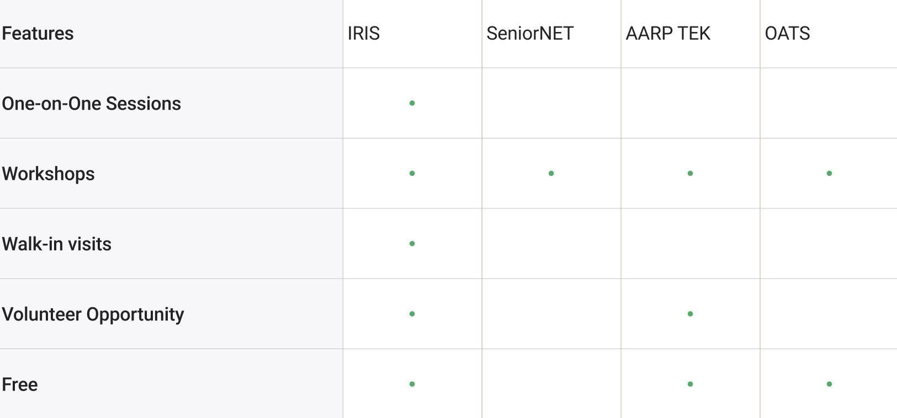
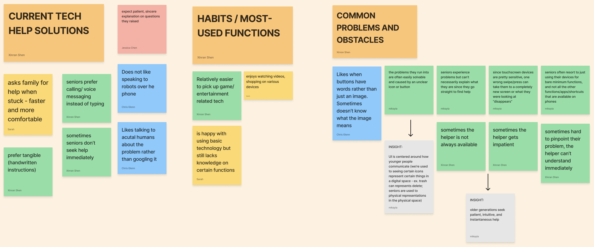
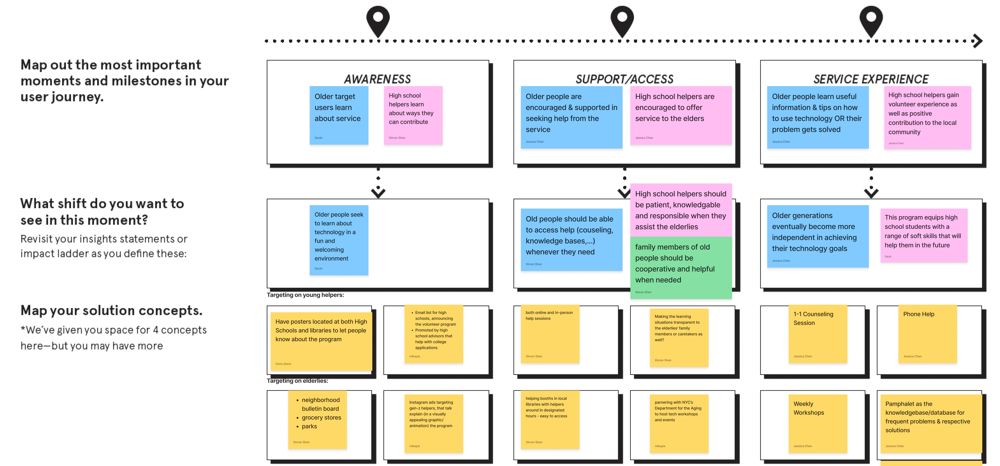

✱ IRIS
Service Design, User Research, Prototyping, UI/UX Design
“How might we make learning technology more fun and efficient for older adults with low-mid tech literacy?”
Introducing IRIS, a program aimed at increasing the tech literacy of the older generation and empowering the younger generation to be community leaders. IRIS was designed by Chris Glenn, Jessica Chen, Sarah Koh, Xinran Shen, and myself as a result of our shared experience of getting that call from an older adult in our lives asking for help with their tech device.
IRIS operates in collaboration with the NYC Department for the Aging as well as the New York Public Library. Programming takes the form of 3 service options for older adults to attend:
- 1. Workshops
- 2. Walk-ins
- 3. Scheduled 1-1 Appointments
Part 1: Exploration
We began our research process by narrowing down our problem statement:
The digital divide is getting bigger, and as a result, older generations are falling behind on using the latest technology. How can we make an easier and more accessible system for them?
When we researched current existing solutions in NYC, we found that they touch on many important features, yet they fail to include them all:
From here, we began conducting interviews with our own parents or grandparents. Personally, I interviewed my grandmother to gauge her habits and issues while using her devices. Through this interview, however, I learned that though she experiences many tech-related problems, it is actually also difficult for her to explain what the issues are. As a result, I decided to also interview my mom and younger brother, who are her primary go-to sources for help.
Part 2: Synthesis
After everyone in my group had conducted interviews, we came together to organize our findings and highlight our insights. We organized our findings into 3 categories: Current Tech Help Solutions, Habits/Most-Used Functions, and Common Problems & Obstacles.
We also narrowed down our two primary user personas: the older adult encountering tech-related issues, and a high school student looking for volunteer opportunities.
Finally, we landed on our HMW Statement: “How might we make learning technology more fun and efficient for older adults with low-mid tech literacy?”
Part 3: Pre-Prototyping
To begin prototyping, we began with a timed idea generation session. In the end, we found that most of our ideas were either touching on a physical manual, smart tech plugins, or a community-based service.
After circling back to the goals of our How Might We—redesigning the learning process for older adults, rather than fixing every tech problem—we landed on an idea that encompasses both the tangibility of learning as well as the aspect of community. To draw out our service plan, we fleshed out this prototype map:
We also fleshed out what our future journey map would look like:

Part 4: Prototypes
Our first MVP and prototype was our My Tech Guide—a booklet for tech helpers to fill out instructions for older adult learners:

After testing our My Tech Guide prototype with 2 sets of helpers + learners, however, we found that:
· Purely text instructions were not easy to follow for the learner
· Addition of screenshots and visual elements proved to be extremely helpful
· For the helper, they were not sure how in-depth to write instructions
· Helpers asked us what wording would be helpful
Part 5: The Result
IRIS' fun, friendly, and accessible marketing materials were designed with our HMW Statement in mind.
Whether an older adult encounters our ad on the subway, or a high schooler stumbles upon our TikTok video, we want to emphasize our 3 key service gains:
1. Mutually beneficial for teachers & learners
- · Equips high school volunteers with skills & tangible experience for their future
- · Helps older learners to gain confidence with their devices & broader knowledge of technology
- · This program is free for learners, making this program accessible to people from a diverse range of income groups
- · By bringing together 2 generations, we are able to build closer communities within New York City